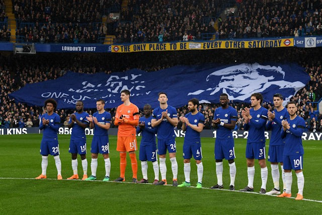

Cesar Azpilicueta had fired us into a deserved first-half lead, but after we passed up a number of chances to extend our advantage, the visitors equalised through substitute Javier Hernandez. Conte said it was a game we really should have won. ,We must be frustrated for the final result but I think this game describes very clearly our season, said the Italian. ,Many games where you have a good performance, create many chances to score but you are not clinical. How many times have I said we didnt take the chances we created? A lot of times this season. Then one chance for West Ham and we conceded a goal. This game describes our season very well. ,Its another result which isnt positive because we are talking about a draw. You must win this game. Im very frustrated and I hope all my players go home and are frustrated as well. You have to have the right mentality. If we accept this result and say today we were unlucky, we are not building anything positive for the future. ,When I say Im frustrated I mean for everyone myself, the players. We win, lose and draw together. When we have this type of result we have to share the responsibility together. Its very difficult for me to explain this game. We are talking about a draw after we have dominated the game. We created a lot of opportunities to score a second or third goal and then we conceded, thats frustrating. ,In the first half and second half we created a lot of chances to score and you must be very clinical. Football is very simple if you score you win. Otherwise, if you score only one goal, especially in England, the game stays in the balance and anything can happen until the end. If there is a corner in the final minutes you risk losing the game. This is not right. We must improve but this season Ive been repeating this many times and Im becoming bored of repeating myself. We are not clinical.
We knew him very well in Italy because he spent a lot of time playing with Milan. He deserved these tributes. We are talking about a tragedy and its very difficult to accept. Its very difficult to find the right words for the family at this moment, I am very close to them. It was really bad news for us and the club